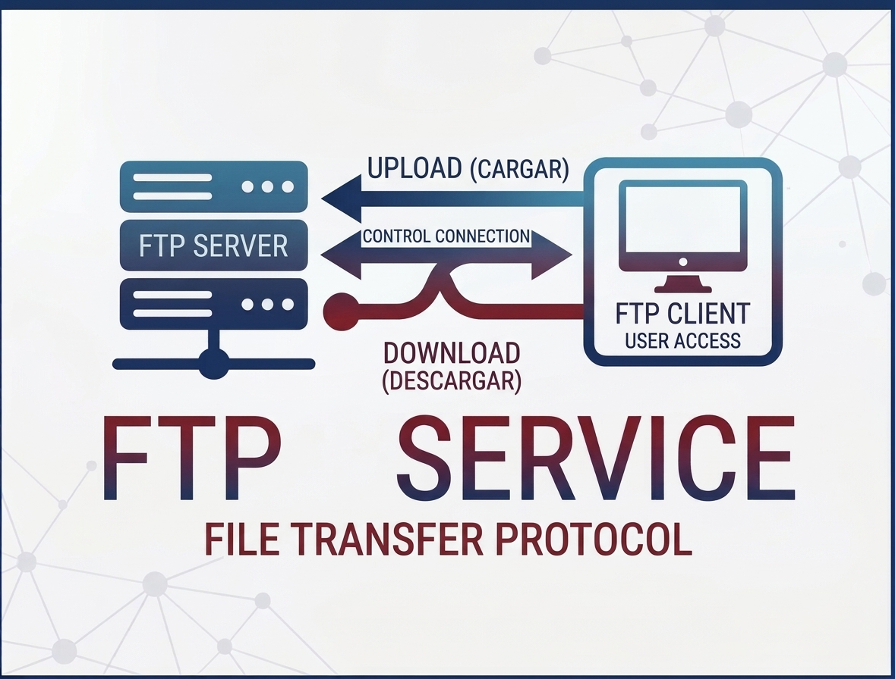
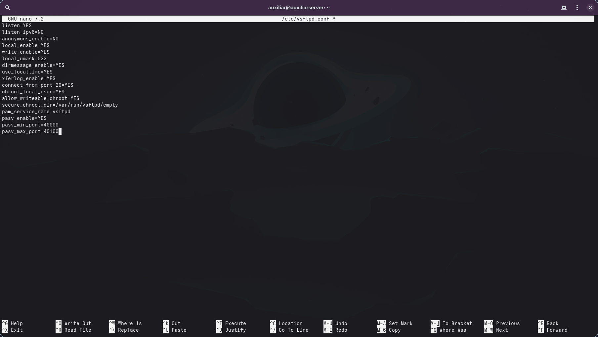
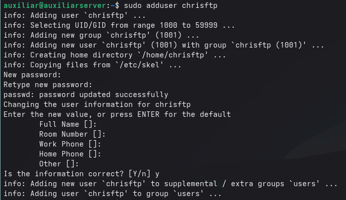
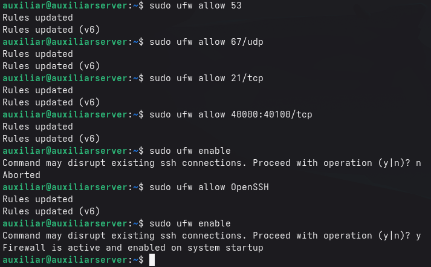

FTP (File Transfer Protocol) es un protocolo diseñado para transferir archivos entre un cliente y un servidor a través de una red. Su uso principal es la subida y descarga de contenidos, especialmente cuando se requiere un acceso estructurado a carpetas y archivos remotos.
Permite subir, descargar, renombrar y organizar archivos mediante conexiones de control y de datos entre cliente y servidor.
Las credenciales del usuario y los permisos del sistema permiten controlar qué carpetas o archivos pueden accederse y modificar.
Puede operar en modo activo o pasivo, adaptándose a distintos tipos de redes y firewalls para mantener la transferencia funcional.
El cliente se conecta al servidor sobre el puerto 21 para iniciar sesión y gestionar la sesión de control. Luego se abre una conexión de datos para subir o descargar archivos, dependiendo del modo activo o pasivo. El servidor valida al usuario, controla el acceso a las carpetas y realiza la transferencia según los permisos establecidos.
FTP es útil para subir contenido a un servidor, publicar archivos para clientes o compartir documentos entre usuarios con permisos específicos en una estructura organizada.
En muchas infraestructuras, FTP sigue siendo una opción para transferir archivos de forma centralizada, especialmente en entornos heredados o con dispositivos que requieren acceso simple a carpetas compartidas.
| Aspecto | Detalle |
|---|---|
| Puertos principales | 21/TCP para el canal de control y puertos dinámicos para la transferencia de datos según el modo activo o pasivo. |
| Autenticación | El cliente se identifica con usuario y contraseña y luego accede a rutas permitidas por el servidor. |
| Modos | Activo y pasivo, según la topología de red y la forma en que los firewalls permiten la conexión. |
| Casos típicos | Subida y descarga de contenido, archivos de trabajo, respaldos y entrega de recursos desde un servidor central. |
| Consideraciones | Para entornos con seguridad exigente, suele preferirse FTPS o SFTP por cifrado y mejor protección. |
sudo apt update
sudo apt install -y isc-dhcp-server bind9 bind9utils vsftpd
sudo cp /etc/bind/named.conf.options /etc/bind/named.conf.options.bak
sudo nano /etc/bind/named.conf.options
listen=YES
listen_ipv6=NO
anonymous_enable=NO
local_enable=YES
write_enable=YES
local_umask=022
dirmessage_enable=YES
use_localtime=YES
xferlog_enable=YES
connect_from_port_20=YES
chroot_local_user=YES
allow_writeable_chroot=YES
secure_chroot_dir=/var/run/vsftpd/empty
pam_service_name=vsftpd
pasv_enable=YES
pasv_min_port=40000
pasv_max_port=40100

sudo adduser ftpuser

sudo systemctl restart vsftpd
sudo systemctl enable vsftpd
sudo ufw allow OpenSSH
sudo ufw allow 53
sudo ufw allow 67/udp
sudo ufw allow 21/tcp
sudo ufw allow 40000:40100/tcp
sudo ufw enable

El servidor FTP permite la transferencia de archivos entre un cliente y un servidor, facilitando el intercambio de datos. Su implementación segura requiere una adecuada planificación y monitoreo.
| Nombre de Usuario | Contraseña |
|---|---|
| chrisftp | 1234 |
| cesarftp | 1234 |
| hanielftp | 1234 |
| johnftp | 1234 |
| angelftp | 1234 |